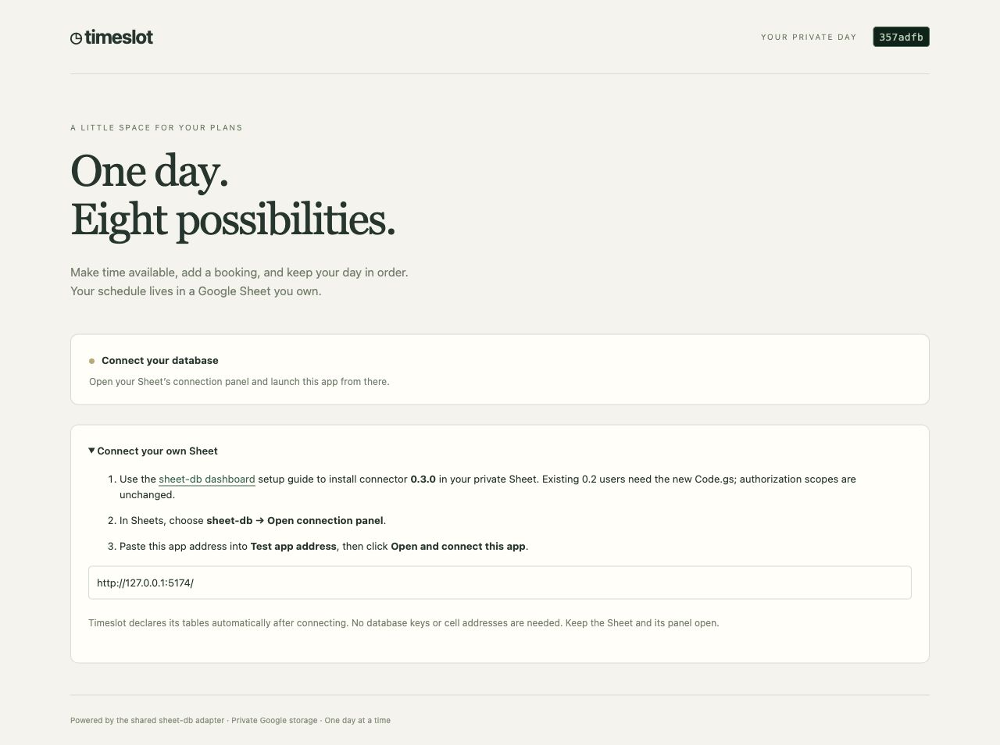
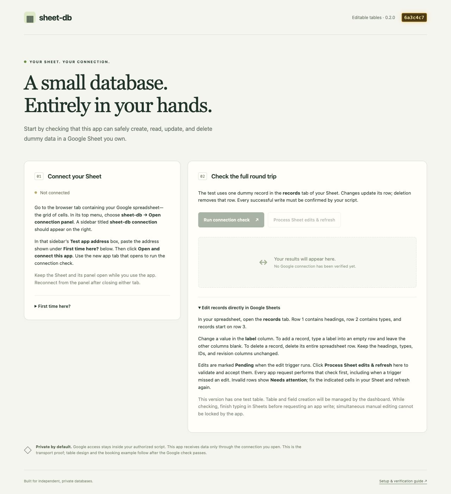

sheet-db / editable tables 0.3.0 / 31 October 2026
Your first private connection
This guide prepares a Google connection test using dummy data. The full dashboard and booking example depend on this test passing.
Version 0.2.0: the user successfully tested the earlier 0.1.0 Google connection. This release replaces its JSON journal with editable table rows. The user has now completed the real seven-stage CRUD check with dashboard/adapter 0.2.1 and connector 0.2.0; the direct spreadsheet edit checks below remain pending. Use the app and all three connector files from the same release. For this test, start with a new blank Sheet; the old journal Sheet is not converted automatically. Its original data is left intact. Diagrams are illustrations; the screenshot shows the earlier local proof layout. No Google permission screenshots have been invented.
Already installed connector 0.2.0? Dashboard/adapter 0.2.1 works with that script. You do not need to recreate the Sheet or authorize again for this patch. Refresh the app after publication and open a new connected app tab from your existing Sheet panel. Database requests now wait up to 60 seconds; a completed script can still be unconfirmed if its reply is lost.
Connect a consuming app such as Timeslot

12App-declared tables require connector 0.3.0. The app supplies its schema; sheet-db creates native table tabs and applies the declared constraints. Existing 0.2.x Panel.html and manifest remain compatible; Google scopes are unchanged.
T1. Replace Code.gs in your existing bound script with the current download.
Expected: the code header shows 0.3.0. Keep existing table tabs and metadata unchanged; no table migration is needed for the legacy proof.
T2. Save the script.
Expected: no unsaved changes or syntax errors remain.
T3. Reopen the Sheet connection panel.
Expected: the panel is ready for a new connection using the updated script.
T4. Enter the consuming app's address in Test app address.
For the deployed example, this is https://scout-38aa2.web.app/timeslot/. For a local preview, use that app's printed localhost URL.
Expected: the address points to Timeslot, not this guide or the dashboard.
T5. Click Open and connect this app.
Expected: Timeslot opens and provisions its own declared tables. Follow its setup screen to choose one day/timezone. Use the Timeslot repository README's verification checklist for availability, booking, cancellation, hour bounds, direct edits and concurrency.
These generic-table/Timeslot changes need a live Google check. Earlier dashboard CRUD success does not prove this new consumer flow. Setup and snapshots scan all declared tables and can take longer; explicit schema retries are idempotent.
Open the app
Using the hosted website? Open sheet-db-dashboard and continue at step 4. You do not need a terminal, npm, or a localhost address. Keep that app tab open alongside this guide.
Steps 1–3 are only for developers running the app on their own computer. Use a desktop browser; Google mobile Sheets sidebar support is outside this proof.
1. Install the repository dependencies.
npm ci
Expected: dependencies install from the lockfile in the sheet-db-dashboard directory.
2. Start the app.
npm run dev -- --host 127.0.0.1
Expected: Vite prints a Local URL, usually http://127.0.0.1:5173/. Leave the terminal running.
3. Open the address printed by Vite in your browser.
Expected: sheet-db shows “Not connected.” Opening it directly does not grant Google access.
4. Expand “First time here?” in the app.
Expected: the app address and three connector-source download links are visible. Keep this page open.
 123
123Create your independent Google resources
This first proof uses a manual installation into your own new Sheet. No prepared-copy link exists yet. After the proof, a blank Sheet containing this script can become the copyable template. Do not put personal data into the proof.
5. Open a browser profile signed into only your chosen Google account.
Expected: the chosen account is the only signed-in Google account in this profile. A private window signed into that account is an alternative. Google documents multi-login problems for Apps Script.
6. Open a new Google Sheet in that profile.
Expected: a blank Sheet owned by your chosen account. Keep sharing Restricted; do not publish it.
7. Rename the Sheet “sheet-db connection test.”
Expected: this name appears in the connection panel later.
8. Choose Extensions → Apps Script.
Expected: the Sheet’s bound script editor opens. No Google Cloud Console setup or web-app deployment is needed.
9. Replace Code.gs with the downloaded Code.gs source.
Open the download in a text editor, select all its contents, and copy them. In the Apps Script editor, select Code.gs in the left file list and replace its contents with the copied source. This file contains JavaScript, including functions named onOpen and sheetDbExecute. If it starts with <!doctype html> or shows a website, it is an incorrect download: use this guide’s link below.
Expected: the editor contains the version 0.2.0 sheet-db code including onOpen, onEdit and openSheetDbPanel.
10. Add an HTML file named Panel containing the downloaded Panel.html source.
In Apps Script, use the + beside Files to add an HTML file named Panel. Open the downloaded Panel.html in a text editor and copy its source into that file. HTML is expected for this file: it defines the connection sidebar. Opening the download as a webpage is not how you install it.
Expected: the editor file list contains Code.gs and Panel.html. The HTML filename must be Panel.
11. Enable “Show appsscript.json manifest file in editor” in Project Settings.
Expected: appsscript.json appears when you return to the editor.
12. Replace appsscript.json with the downloaded manifest.
Open the downloaded manifest in a text editor and copy its JSON. Back in Apps Script, select appsscript.json in the file list and replace its contents. Keep the filename appsscript.json.
Expected: exactly three scopes: the current spreadsheet, showing the in-document panel, and your email address. No Drive-wide access, external request scope, shared library or developer project ID is included.
13. Save the script project.
Expected: the editor reports saved changes without a syntax error.
14. Run openSheetDbPanel from the editor’s function selector.
Expected: the first run asks for Google authorization. This is your own script. No data operation has been dispatched by the app.
15. Select your intended Google account in the authorization flow.
Expected: that account owns the Sheet. If another account appears, cancel and return to the dedicated profile.
16. Review the actual permission screen.
Expected: permissions correspond to the three manifest scopes. Wording can vary. If broader permissions appear, cancel and inspect the files before continuing.
17. Grant the reviewed permissions to your script.
Expected: the panel opens in your Sheet. If denied, the test cannot connect; return to step 14 when ready.
If Google shows an unverified-app warning, pause and check that the script is your own bound project containing these reviewed files. Record the actual warning (with email/identifiers obscured). Google documents such warnings for some unverified sensitive-scope flows. This environment has not observed your screen; no warning bypass or exact consent wording is assumed. Organization policy can prevent authorization.
Pair and run the real Google check
You should now have three browser tabs: your Google spreadsheet (the grid of cells), its Apps Script editor, and the sheet-db app. The connection panel is a sidebar inside the spreadsheet. It is not the Apps Script editor and it is not the “First time here?” section on the app.
18a. Switch to your Google spreadsheet tab.
Expected: you see the grid of cells in your private test Sheet. Keep this guide open in another tab.
18b. Choose sheet-db → Open connection panel from the spreadsheet’s top menu.
Expected: a sidebar titled “sheet-db connection” appears on the right. Inside it are “Your private connection,” a box labelled “Test app address,” and an “Open and connect this app” button. If the sheet-db menu is missing, reload the spreadsheet after saving the script. If it is still missing, return to the editor and run openSheetDbPanel.
18c. Copy the app address below.
For the hosted app we are testing, copy this entire address:
https://scout-38aa2.web.app/sheet-db-dashboard/
If you are testing your own deployment or a local development server, copy the address displayed in that app’s “First time here?” section instead.
Expected: you copied the app address, not the guide URL, a Google Sheet link, or the Apps Script editor link. “Local URL” only applies to a developer’s local server; hosted users do not need one.
18d. Paste that address into “Test app address” in the spreadsheet sidebar.
Expected: the box on the right side of your Google spreadsheet contains the complete app address. Leave the spreadsheet and sidebar open. The app at this address will be able to read and change this Sheet’s dummy records while connected.
19. Click “Open and connect this app.”
Expected: a new app window or browser tab opens automatically. Switch to that newly opened app tab, even if an older dashboard tab is already open. Both the spreadsheet sidebar and the new app should show Connected with the same Google account and database name. Keep the original spreadsheet tab and its sidebar open. If no tab opens, check the browser’s popup-blocked indicator. If connection fails, stop here and use the recovery table below.
20. Check the displayed account and database identity.
Expected: the email matches your intended account, and the database ID is the ID in your own Sheet URL. Do not continue if either differs.
21. Click “Run connection check.”
Expected: seven green checks: create, read, update, duplicate create replay, stale edit rejection, delete, and deletion readback. First-time database setup can take longer; keep the tabs open while each request waits up to 60 seconds. A message being dispatched is never enough for a green write check. If confirmation is lost, use Retry interrupted check in the same page rather than starting another attempt.
22. Inspect the Sheet’s new records tab.
Expected: the records tab has headings in row 1 (id, label, _revision, _status) and types in row 2. The test record’s data row has been physically removed. There are no JSON record cells or retained old labels. Supporting metadata/receipt tabs are hidden; do not edit those system tabs.
23. Keep the Sheet and its connection panel open.
Expected: the app stays connected so you can try editing records directly below. The optional closed-panel recovery test can be done afterward.
24. Record the results in the repository’s docs/verification.md checklist.
Expected: real observations are separate from unit-test results. Do not record secrets, pairing fragments, private rows or account addresses in a public place.
Try direct record editing
Do these checks after the seven app checks pass. The first two rows are managed headings and types. Record rows start at row 3. Edit only labels, add new record rows, or delete entire record rows. Do not change IDs, revisions, headings, datatypes, columns, table names or supporting tabs.

1224a. Type “My spreadsheet test” into cell B3 of the records tab.
Expected: the label appears. Leave A3, C3 and D3 blank when adding the record; the connector will assign its ID and revision. A Pending marker may appear after the edit trigger runs. A missed marker does not lose the edit.
24b. Click “Process Sheet edits & refresh” in the connected app.
Expected: the app shows My spreadsheet test with a generated ID and revision 1. Your Sheet now shows those managed values. No JSON record is created.
24c. Change that row’s label in the Sheet to “Edited in Sheets.”
Expected: the new text stays visible and may be marked Pending. Several edits before refreshing will be processed as the latest value, rather than saved as an audit of keystrokes.
24d. Click “Process Sheet edits & refresh” again.
Expected: the app shows Edited in Sheets with revision 2. Every normal database operation does this reconciliation before its own work; heartbeat connection checks do not.
24e. Clear the label cell while leaving the row’s ID intact.
Expected: the row now has an invalid blank required label. This deliberately tests error handling; clearing a label is not deletion.
24f. Click “Process Sheet edits & refresh.”
Expected: an error identifies the invalid row. Its cells remain visible with Needs attention. The app does not silently restore the old text or execute a new write over invalid data.
24g. Fill the label with “Fixed in Sheets.”
Expected: the corrected value remains in your Sheet, ready for the next refresh.
24h. Click “Process Sheet edits & refresh.”
Expected: the corrected row is accepted and appears in the app with the next revision.
24i. Delete that record’s entire spreadsheet row.
In Sheets, right-click the row number on the left and choose Delete row. Delete only the record row; keep the headings and types in rows 1 and 2.
Expected: the record’s cells are removed. Its previous label is not retained by sheet-db as an audit or tombstone.
24j. Click “Process Sheet edits & refresh.”
Expected: the app no longer lists the record. Its accepted metadata is removed; only bounded operational receipt identifiers may remain. Keep the Sheet stable while requesting app writes; simultaneous human edits do not obey the script lock.
Optional: closed-panel recovery
R1. Close only the connection sidebar in your Sheet.
Expected: the Sheet stays open while the app loses its bridge. No background offline queue continues.
R2. Keep the connected app tab visible for 20–30 seconds.
Expected: Not connected and a connection-loss message. Sleeping/background tabs can delay this detection.
R3. Open the Sheet’s connection panel again.
Expected: the panel appears on the right, ready for a fresh connection.
R4. Open the app from the panel again.
Expected: the new app tab connects to the same Sheet and current records.
Verify the copy journey
This checks the intended reusable-template behaviour with an already working blank/dummy Sheet. It is still pending live verification.
25. Choose File → Make a copy in your test Sheet.
Copy only a stable Sheet with no unprocessed edits or interrupted operation. The original app’s last refresh should have completed successfully. The copied database discards the original’s retry authority; it does not replay queued work.
Expected: a different Sheet URL owned by the copying account. Current table rows and supporting metadata are copied; database identity must come from the new actual file ID. Old browser operations must not be replayed into the copy.
26. Open Extensions → Apps Script in the copy.
Expected: a different bound script project with the same source files. Its settings must contain no manually configured creator project or shared script library. Google assigns each script a default project; record the association information Google exposes.
27. Run openSheetDbPanel in the copied script.
Expected: authorize this independent copy if requested; its panel can launch the app. Use steps 18–22 for a fresh check. The app must show the new Sheet’s different database ID.
Return visits and another device
28. Open your existing private Sheet in the intended account’s browser profile.
Expected: the same Sheet URL and data, including after switching browsers or devices. For localhost testing on another device, run the app locally there or use a dedicated HTTPS static deployment; one computer’s localhost is not reachable from another.
29. Choose sheet-db → Open connection panel.
Expected: the panel appears. If the menu is missing, reload the Sheet once after saving the script.
30. Open the app from the panel again.
Expected: a fresh pairing; the app does not recover authorization from browser storage. Sessions last 30 minutes in this proof. Only one active app session per Google user/script is supported.
Recovery
| What you see | Action and expected result |
|---|---|
| Popup blocked | Allow popups for the Google-hosted panel, then click Open and connect this app again. A direct app URL cannot replace the popup relationship. |
| OPENER_UNAVAILABLE / connection timeout | Reopen from the panel with both tabs active. Record browser version and actual origin. If browser or hosting headers sever the opener, the candidate transport has failed its gate; do not weaken origin checks. |
| Closed Sheet/panel or sleeping tab | Open the panel and reconnect. No offline queue runs when it is closed. A previously dispatched write can still finish; inspect its original receipt before retrying. |
| Denied/revoked permissions | Run openSheetDbPanel in your own script to reauthorize. Verify scopes again. Cancelled consent never becomes a successful connection. |
| Wrong account / IDENTITY_UNAVAILABLE | Use a separate browser profile or private window signed into only the intended account. Email identity must be available; the proof fails closed instead of guessing. |
| WRITE_UNCONFIRMED | Do not label it saved. Keep the original operation ID, record ID, issuedAt, data and revision with that account/database. Reconnect to the same identity and retry exactly that operation through the adapter. If the current app page offers Retry interrupted check, use it to resume with exactly the original operations. Keep that page open; it retains the attempt only in memory. If you have closed/refreshed an earlier failed page, the new page cannot recover its attempt automatically. Inspect the old test record and execution outcome before deliberately removing a completed leftover dummy record and starting a fresh check. |
| REVISION_CONFLICT | Read the current record and review the change before submitting a new operation. The automated stale-edit stage expects this rejection. |
| BUSY / QUOTA_EXCEEDED / Google error | Wait before a manual retry. Check the script’s Executions view for the actual error and current quotas. Daily quotas may require waiting for their reset; waiting briefly does not guarantee recovery. Never create new operation IDs to blindly retry an uncertain write. |
| Receipt capacity / RETRY_EXPIRED | The proof retains at most 1,000 unexpired operation receipts for 24 hours. Wait for old receipts to expire if capacity is reached. Retry an uncertain attempt with its original issuedAt, IDs, revision and data. An expired attempt must be inspected rather than blindly repeated with fresh identifiers. |
| MANUAL_EDIT_INVALID | Fix the highlighted record cell and refresh. New rows need a label with blank managed cells; existing IDs and revisions must stay unchanged. Formulas and text starting with = are unsupported in this proof. |
| SCHEMA_CHANGED / UPGRADE_REQUIRED | Headers, types and table names are managed. Restore any accidental structural edits. An old 0.1.0 journal needs a fresh blank Sheet for this release; no automatic migration is provided. |
| COPY_REQUIRES_REVIEW | A copied Sheet contains unfinished work from the source. Do not run those operations in the copy. Accept edits and resolve any interrupted operation in the original, then make a new stable copy; a fresh blank Sheet is another option. |
| RECOVERY_REQUIRED / STORAGE_CORRUPT | Stop and preserve the Sheet for inspection. An interrupted operation could not be resolved safely. Do not delete receipts, clear managed IDs or submit replacement writes to force progress. |
Update your own connector without losing data
Copies do not auto-update from a shared script library. This release understands schema 2; no migration from the old JSON journal is provided. Use a fresh blank Sheet for that transition. Within schema 2, compatible source updates preserve current table rows.
31. Disconnect all apps using the Sheet.
Expected: no new connector requests are being made. Allow any in-flight write to finish before replacing source.
32. Make a private backup copy of the Sheet.
Expected: a separate copy preserves the current tables, metadata and script before the update. A backup has a new database identity and is not the original connection target.
33. Replace only the script source files with a reviewed compatible release.
Expected: the original Sheet and records tab stay intact. Read release notes; stop if the storage schema is incompatible or no migration is supplied.
34. Save the updated script.
Expected: the source is saved, with the table data unchanged. Permission changes can require renewed consent.
35. Reopen the connection panel.
Expected: the updated panel appears in the original Sheet.
36. Open the app from the updated panel.
Expected: a fresh connection shows the original Sheet ID.
37. Run the connection check.
Expected: the check passes against the original database. If not, restore the compatible script source from the backup and investigate before using real data.
Ownership, cost, and limits
You own the private Sheet, its bound script, authorization and default Google project. Shared static app hosting and package distribution are separate from Google access. Sharing the Sheet with editors also gives them access to its bound script; Restricted sharing matters. Never publish it or share a private copy link as a public template.
The proof uses no paid Google feature, billing account or shared Google API credential. Google’s service quotas are finite and can change without notice. Current documentation lists a six-minute execution limit and 30 simultaneous executions per user; this panel allows four in-flight calls and serializes storage with a document lock. The proof has one label table, bounded to 1,000 records, and at most 1,000 unexpired operation receipts. Receipts expire after 24 hours and contain no label values. Every app request scans the current table. Manual spreadsheet edits bypass the lock. This is not a general transactional database, permanent-free promise, unattended backend or public booking system.
Official references reviewed 31 October 2026: copy ownership, sandbox, script calls, default projects, authorization, OAuth warnings, multi-login, locks, quotas.